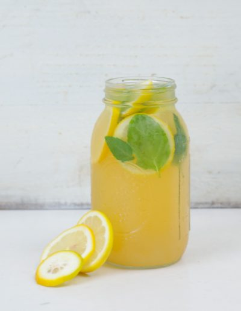
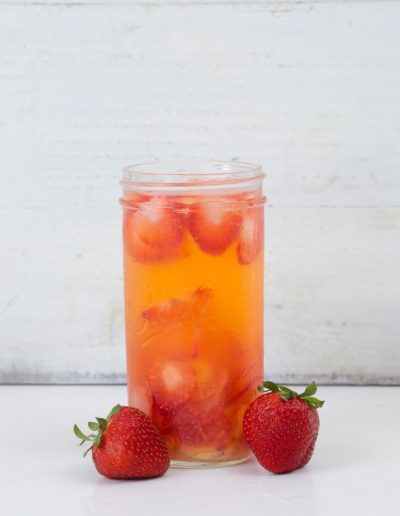
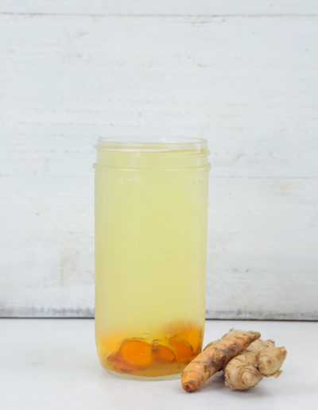
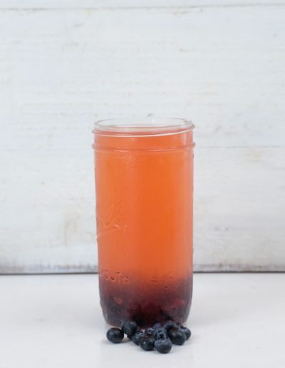

Desayunos saludables
- 
- 
- 
- 
Menta con Limón.
- 2 bolsas de té de menta
- 1 cucharadita de miel de abeja
- Rodajas de limón
- Menta fresca
- Hielo
- Agua
Ingredientes:
- En agua caliente sumerge dos bolsas de té de menta y deja reposar por 5 minutos.
- Agrega la miel de abeja y revuelve muy bien.
- En un vaso de vidrio con hielo agrega el jugo de limón, el tea de menta, las rodajas de limon y la menta fresca.
Modo de preparación:
Volver al Inicio.
Jengibre con Fresa
- 1/4 taza de jengibre fresco picado
- Jugo de 1 limón
- 5 fresas picadas
- Stevia (para endulzar)
- Agua
- Hielo
Ingredientes:
- En agua caliente sumerge el jengibre fresco y deja reposar por 10 minutos.
- En un vaso de vidrio con hielo agrega el jugo de limón, el agua con jengibre, la fresa y endulza con stevia.
Modo de preparación:
Volver al Inicio.
Cúrcuma con Jengibre
- 1/4 taza de cúrcuma fresca picada
- 1/4 taza de jengibre fresco picado
- Jugo de 1 limón
- Stevia (para endulzar)
- Polvo de cayena (opcional)
- Agua
- Hielo
Ingredientes:
- En agua caliente sumerge el jengibre fresco y la cúrcuma, deja reposar por 10 minutos.
- En un vaso de vidrio con hielo agrega el jugo de limón, el agua con jengibre y cúrcuma y espolvorea cayenne.
Modo de preparación:
Volver al Inicio.
Té verde con Menta
- 1 bolsa de té verde
- 1 bolsa de té de menta
- 1 cucharadita de miel de abeja
- 1/4 taza de piña fresca picada
- Menta fresca
- Agua
- Hielo
Ingredientes:
- En agua caliente sumerge las dos bolsas de té y deja reposar por 5 minutos.
- Agrega la miel de abeja y revuelve muy bien.
- En un vaso de vidrio con hielo agrega el té, la piña y las hojas de menta.
Modo de preparación:
Volver al Inicio.